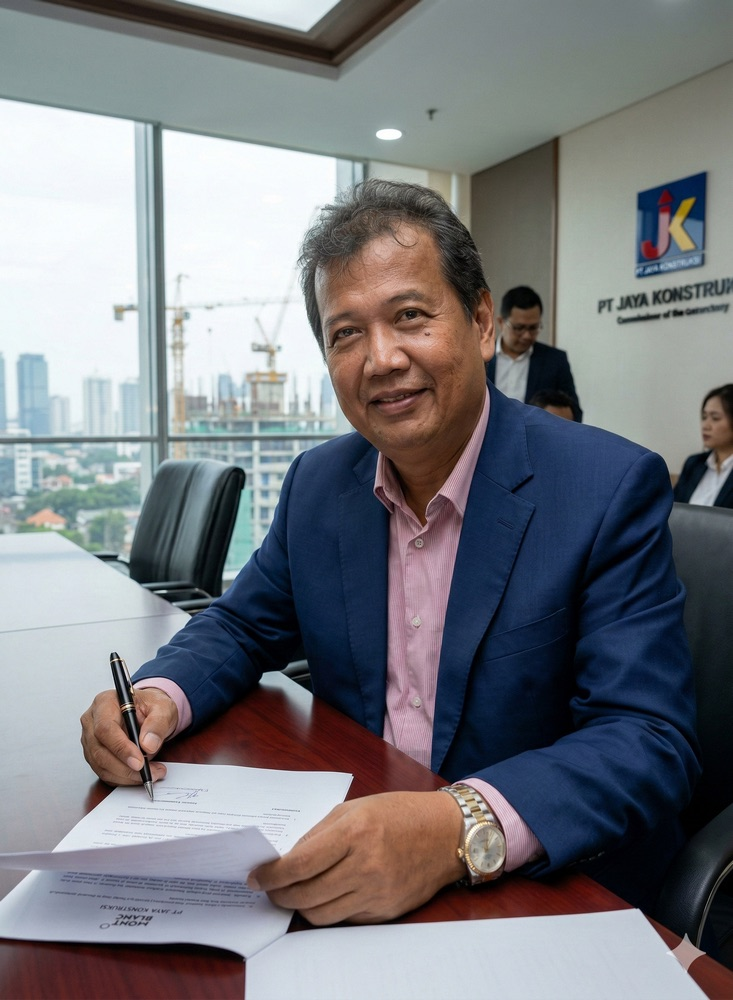

Komisaris Utama
Ir. Monang, S.T., M.T., IPM.
Mantan direktur dengan insting setajam elang. Pengawas anggaran paling ketat, pantang ada selisih di RAB proyek maupun dana operasional armada logistik yang luput dari pantauannya.
Sertifikasi Profesional:
- Certified Internal Auditor Konstruksi (CIAPK)
- Ahli Utama Manajemen Evaluasi Proyek
- Pengawas Mutu Beton Standar Internasional